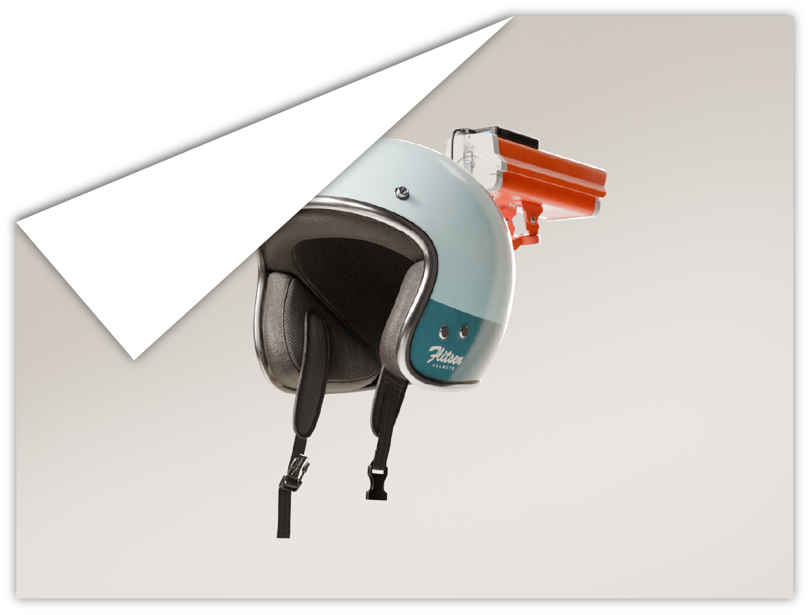
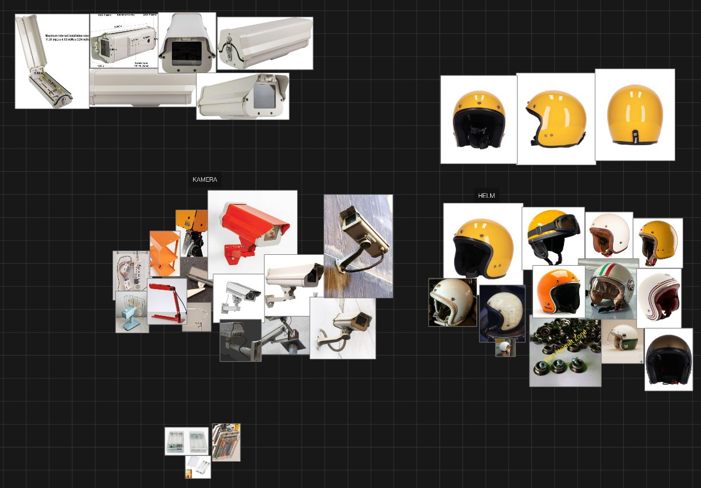
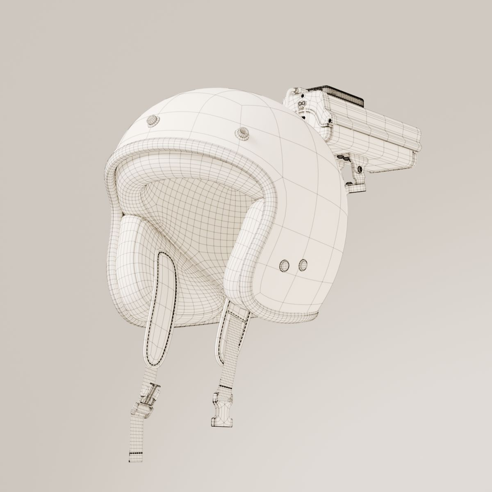
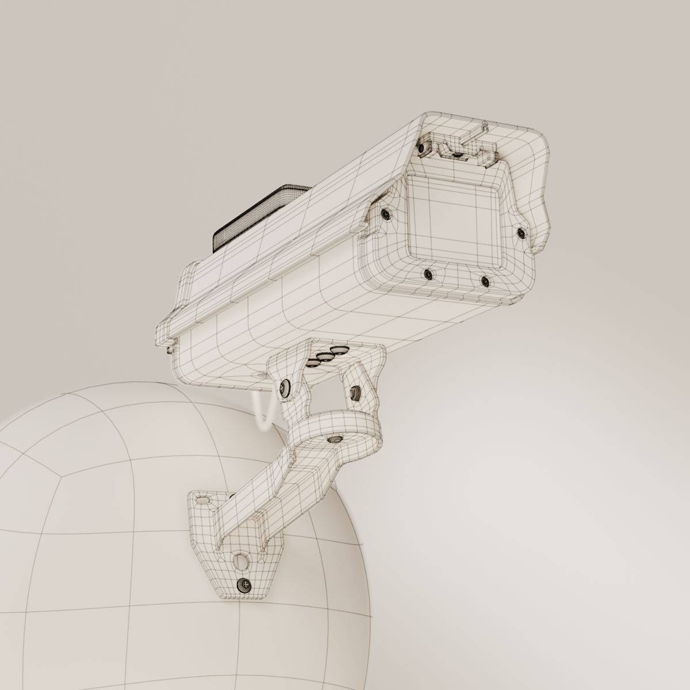
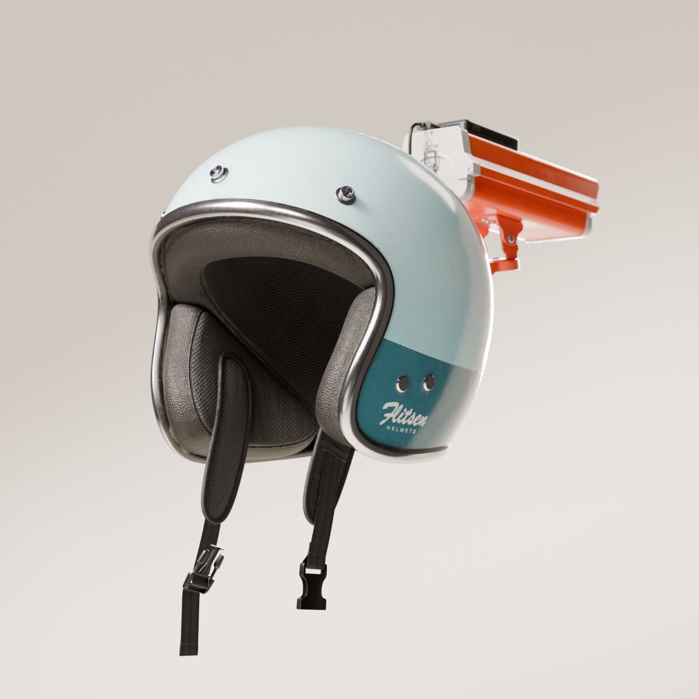
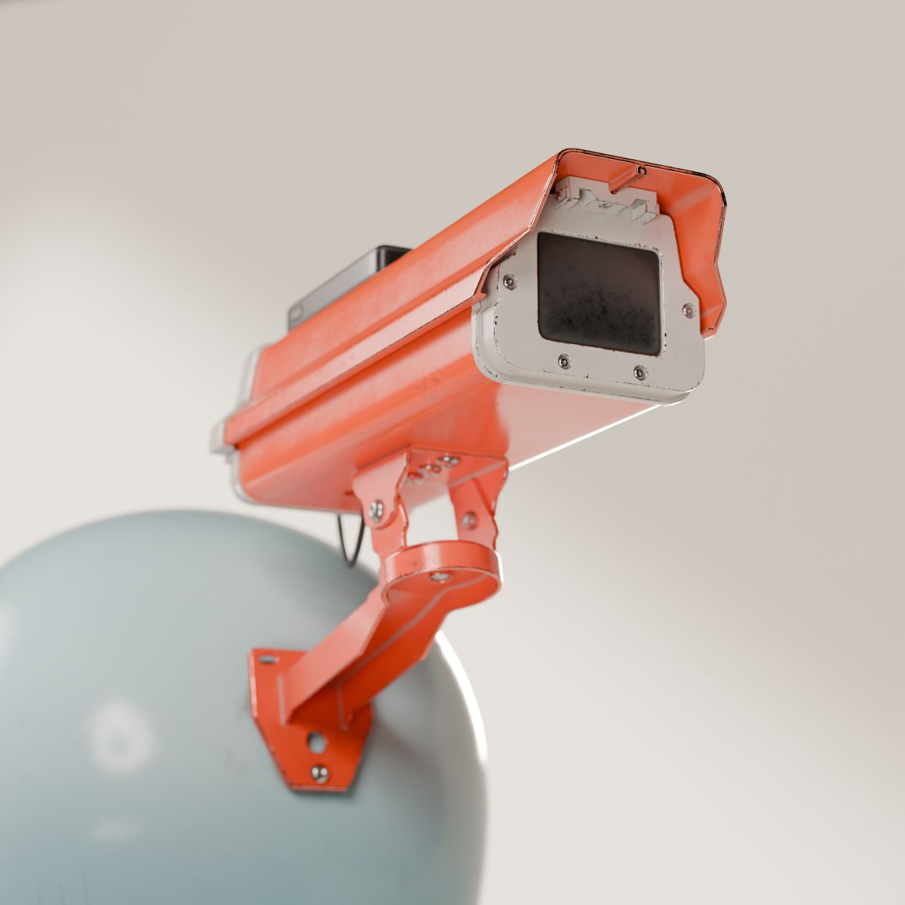
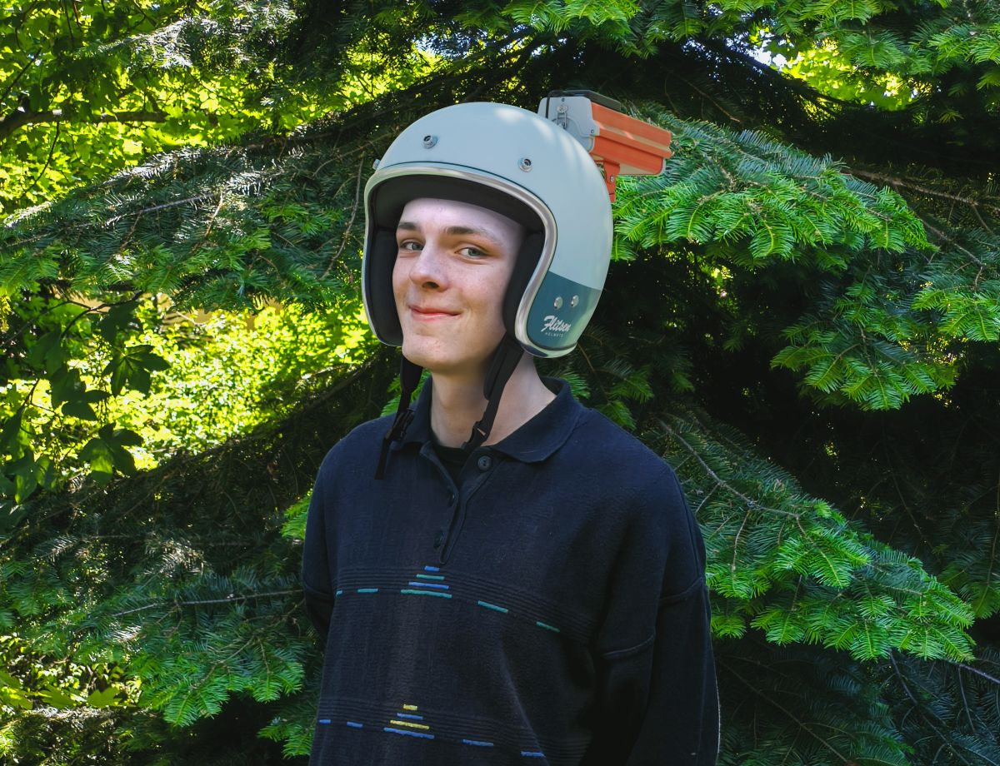

This object is intended to represent a project by a hobbyist who wants to know everything happening behind their back. After making initial sketches, I collected a series of reference images on a PureRef board. Based on the sketches and images, I first created a quick 3D blockout of the model to define its structure and dimensions. Building on that, I modeled the more detailed objects mostly using a subdivision workflow.
Since the finished model was intended for film productions, or in my case photography, I focused on achieving a high level of detail and clean topology. I then prepared the model and imported it into Substance Painter for the texturing process. The objects were meant to appear somewhat worn, as if they were simply parts the hobbyist had lying around, but without looking excessively run-down.
I rendered the helmet in Blender using the Cycles render engine.
2026
Blender, Substance Painter, Photoshop
This object is intended to represent a project by a hobbyist who wants to know everything happening behind their back. After making initial sketches, I collected a series of reference images on a PureRef board. Based on the sketches and images, I first created a quick 3D blockout of the model to define its structure and dimensions. Building on that, I modeled the more detailed objects mostly using a subdivision workflow.
Since the finished model was intended for film productions, or in my case photography, I focused on achieving a high level of detail and clean topology. I then prepared the model and imported it into Substance Painter for the texturing process. The objects were meant to appear somewhat worn, as if they were simply parts the hobbyist had lying around, without looking excessively run-down. I rendered the helmet in Blender using the Cycles render engine.

Reference images in PureRef

Helmet wireframe

Camera wireframe

Helmet render

Camera render

For this composited shot, I created a 360° environment map of the photo location using my phone, although due to limited equipment it did not provide an HDR image. In Blender, I reconstructed the lighting and perspective. In Photoshop, I combined the layers and made final adjustments. I am happy with the result, although I could have collected better reference images during the photo shoot to recreate the lighting more accurately.